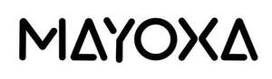

Trade Mark Journal No.2025/021 23 May 2025
UK00004201943 12 May 2025 (7,8,10)

- Class 7
- 3D bioprinters; bread cutting machines; brushes for vacuum cleaners; coal-cutting machines; coffee grinders, other than hand-operated; dishwashing machines; grating machines for vegetables; household cleaning and laundry robots with artificial intelligence; kitchen grinders, electric; kneading machines; machines and apparatus for carpet shampooing, electric; meat choppers, electric; mills for household purposes, other than hand-operated; pasta making machines, electric; pepper mills, other than hand-operated; washing apparatus; washing installations for vehicles; whisks, electric, for household purposes.
- Class 8
- Cutlery; eyelash curlers; fingernail polishers, electric or non-electric; laser hair removal apparatus, other than for medical purposes; manicure sets, electric; shaving cases; table cutlery [knives, forks and spoons]; vegetable peelers, hand-operated; vegetable slicers, hand-operated; vegetable choppers; vegetable spiralizers, hand-operated.
- Class 10
- Apparatus for acne treatment; baby feeding dummies; diabetic monitoring apparatus; reusable sanitary masks made of gauze; esthetic massage apparatus; glucose meters; lasers for medical purposes; massage chairs with built-in massage apparatus; vibromassage apparatus; apparatus for DNA and RNA testing for medical purposes; artificial limbs; massage apparatus; resuscitation apparatus; stockings for varices; therapeutic facial masks; thermometers for medical purposes; teeth protectors for dental purposes; sphygmotensiometers; pulse meters.
Shenzhen Nova Star Co., Ltd.
Representative: Marcin Barczyk